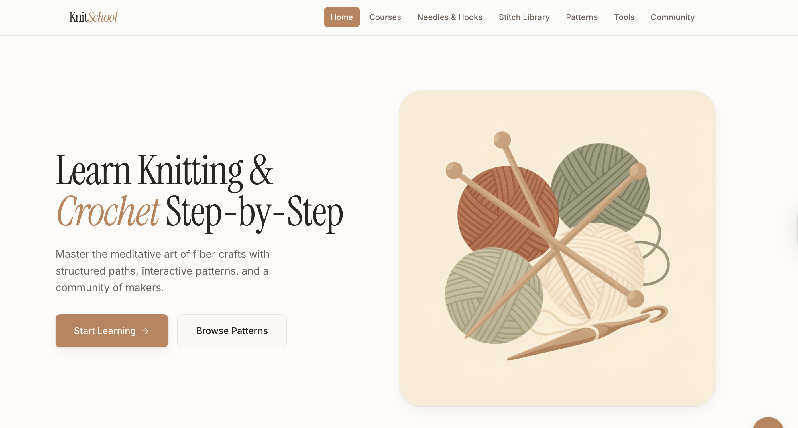
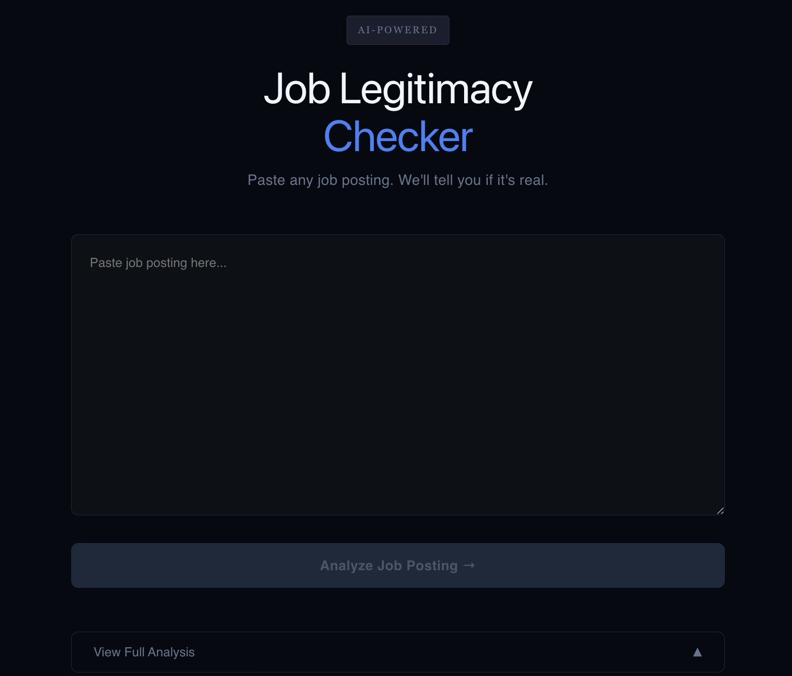

› hello, world.
Computer Science graduate who enjoys transforming complex data into compelling stories that drive business decisions and building scalable softwares that solve real world problems.
UC-Riverside
B.S. Computer Science, 2025
I'm a CS grad who genuinely loves working with data finding patterns, drawing out insights, and turning numbers into something that actually means something. I also just like building things, whether that's a clean data pipeline or a full product from scratch
Outside of tech I'm usually drawing, painting, or working on some kind of arts and crafts project. I like making things with my hands as much as I like making things with code.


Comprehensive analysis of 1,351 Amazon products across 9 categories using SQL data extraction and Python data cleaning. Identified top-performing categories, analyzed rating distributions, and discovered hidden gem products with significant revenue potential. Applied advanced SQL queries for data aggregation and analysis.
Analyzed the impact of pricing and discount strategies on revenue and customer satisfaction across 1,351 Amazon products. Identified optimal pricing tiers and discount ranges through statistical analysis — validated with ANOVA (F=18.45, p<0.001) — and built an interactive Tableau dashboard to visualize findings across 9 product categories.
Applied NLP techniques to analyze sentiment patterns across 1,000+ Amazon reviews using VADER sentiment analysis, LDA topic modeling, and aspect-based extraction. Achieved 77% accuracy in sentiment prediction against star ratings, with 0.98 recall for positive sentiment, revealing that Design is the top satisfaction driver (+0.94) while shorter reviews skew more negative than longer ones.
I'm actively looking for internship and full-time opportunities. Whether you have a role, a project idea, or just want to talk tech, my inbox is open.
Send me an email